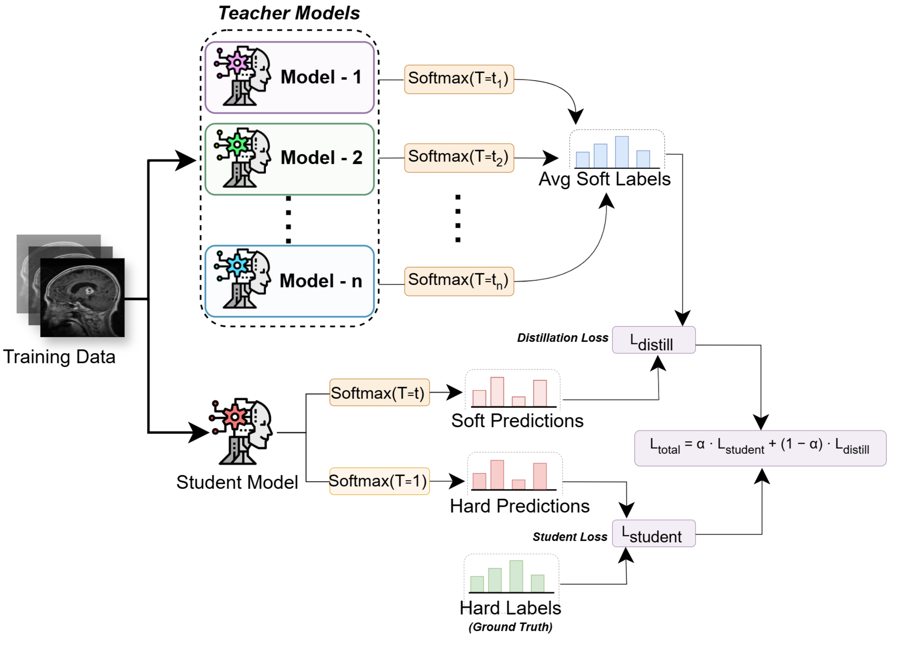
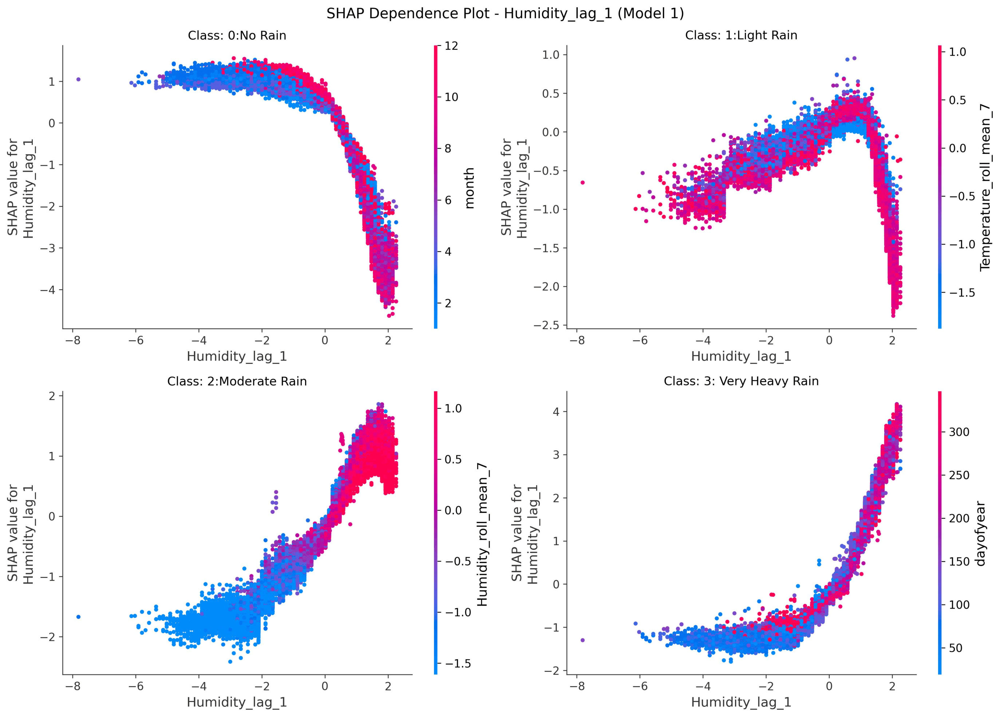
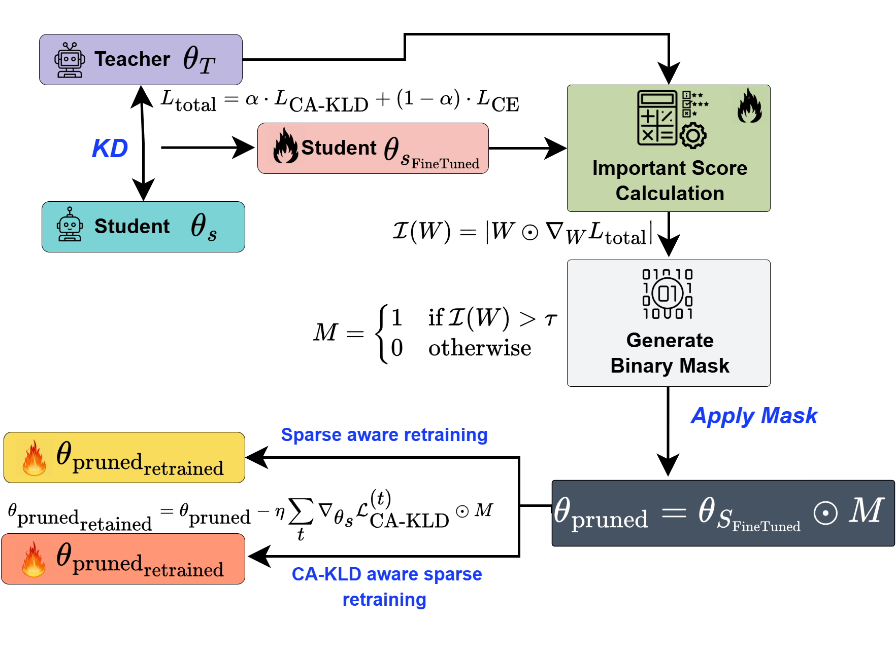
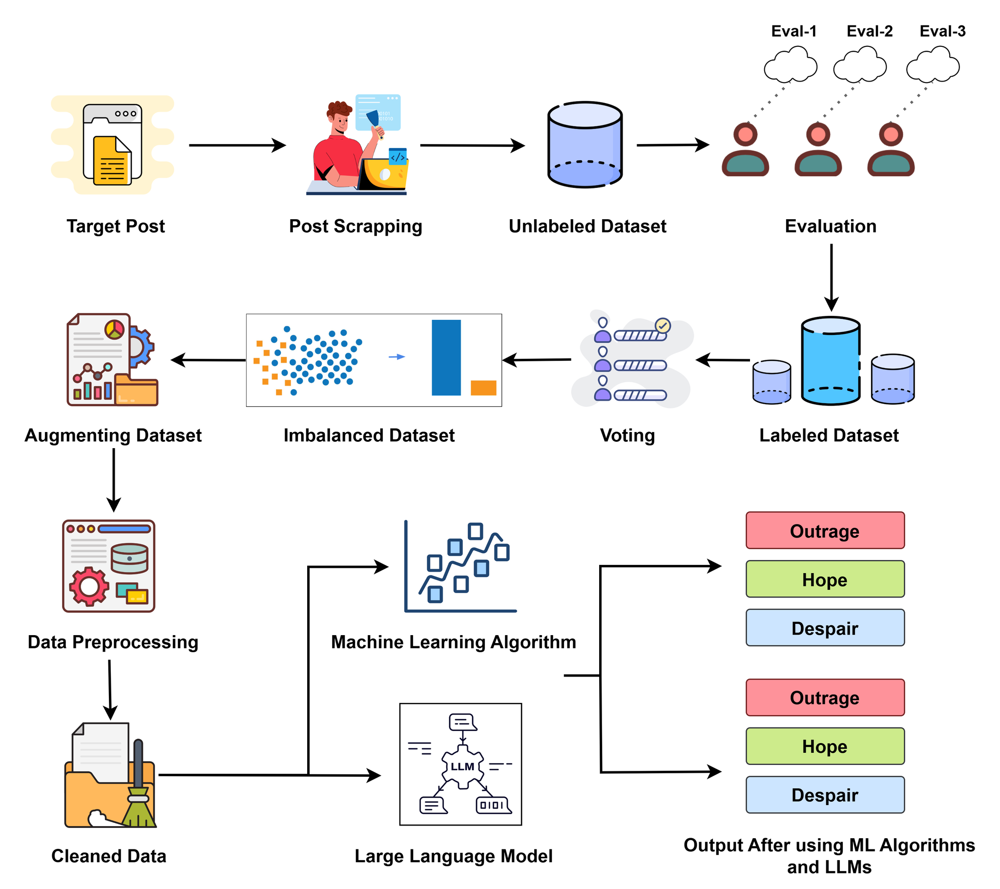

Publications
Peer-reviewed journal articles, conference papers, manuscripts under review, and works in preparation. Google Scholar profile →
2
Q1 Journal Articles
2
Conference Papers
2
Under Review
3
In Preparation
Peer-Reviewed Journal Articles

J.1
Multi-Teacher Knowledge Distillation and Ensemble Algorithm for Efficient Brain Tumor Classification in Resource-Constrained Environments with Explainable AI
Knowledge-Based Systems, 2025
Q1
IF 7.6

J.2
Ensemble and Temporal Feature-Based Framework for Rainfall Classification in Bangladesh
PLOS ONE, 2026
Q1
IF 2.6
Peer-Reviewed Conference Papers

C.1
Teacher-Guided One-Shot Pruning via Context-Aware Knowledge Distillation
IEEE BigData 2025, Macau, China
CORE B
18.8% acceptance

C.2
When a Nation Speaks: Machine Learning and NLP in People's Sentiment Analysis during Bangladesh's 2024 Mass Uprising
IEEE International Conference on Computer and Information Technology (ICCIT 2025)
Manuscripts Under Review

U.1
CAT-GS: Calibrated Adaptive Gating for Balanced and Robust Multimodal Learning
Under review at Neurocomputing
Q1
Under Review

U.2
UnRestSent200K: Benchmarking Contextual Sentiment Understanding During Political Unrest
Submitted to KDD 2026
Under Review
Manuscripts in Preparation

P.1
CLIPByte: Open-Vocabulary Multilingual Image Captioning with Byte-Level Decoding
Targeting BMVC 2026
In Preparation
A tokenizer-free vision–language model pairing CLIP ViT-B/32 with a ByT5-small byte-level decoder for captioning across English, Thai, Japanese, Italian, German, and Vietnamese.

P.2
Beyond CLIP: Leveraging DINO for Reliable Memory Retrieval in Cache-Based Test-Time Adaptation
Targeting BMVC 2026
In Preparation

P.3
Neuroevolving Kolmogorov–Arnold Networks
In preparation
In Preparation